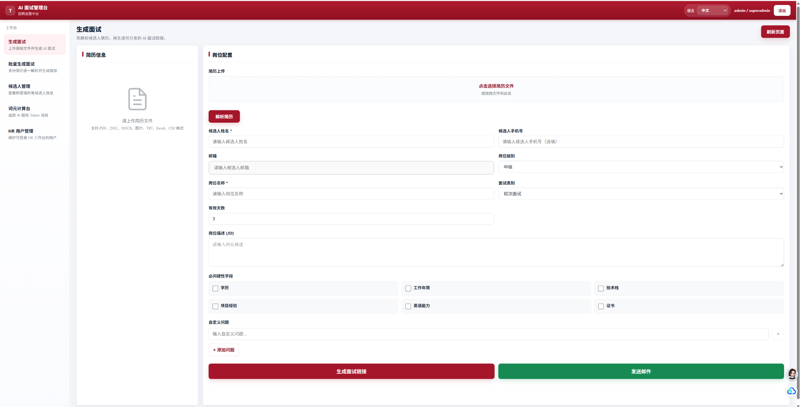
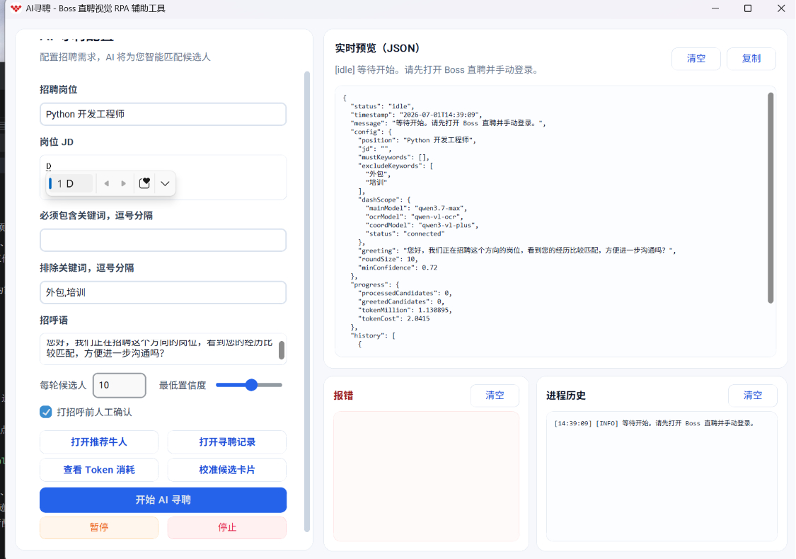
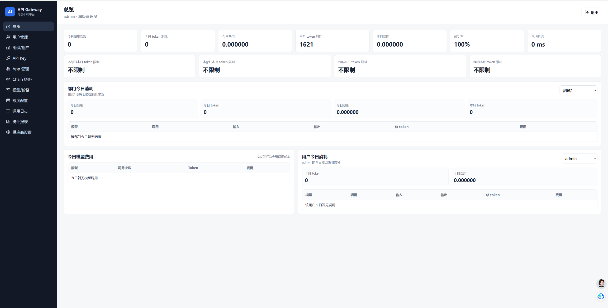
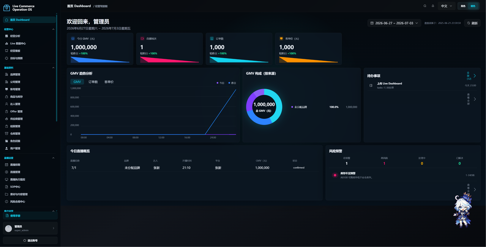
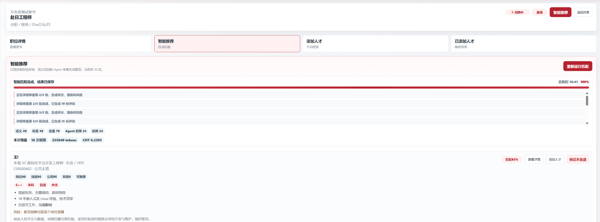
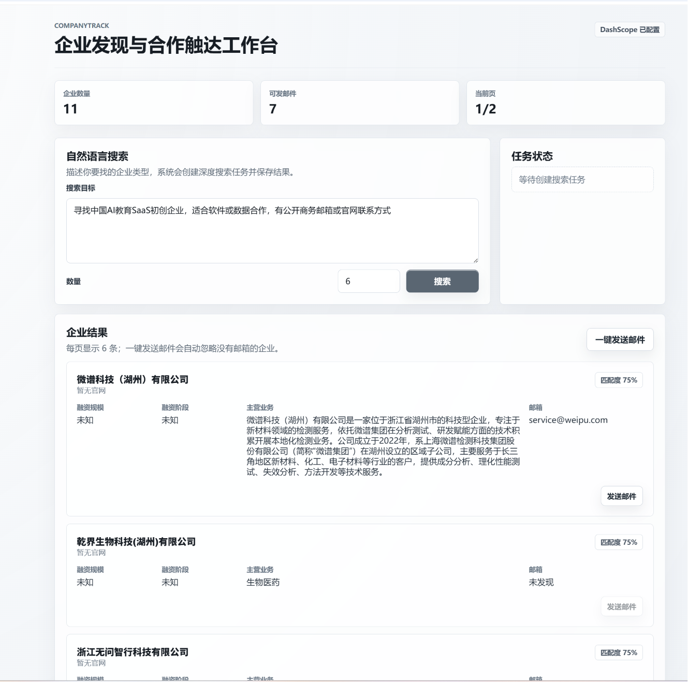
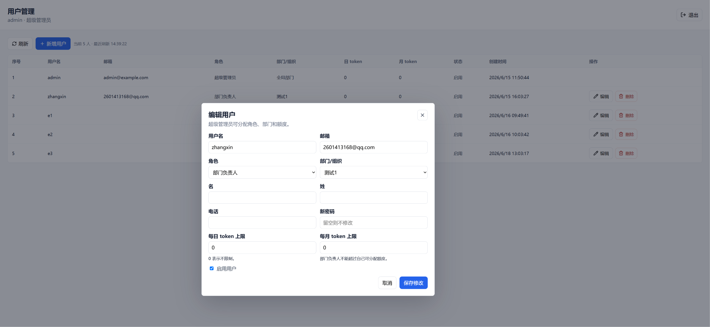

AI 招聘 / Django / WebSocket / Omni
AI 面试系统
面向 HR 创建面试任务、候选人在线语音面试、系统自动保存会话并生成评估报告的完整招聘闭环。核心是把岗位 JD、候选人简历、结构化面试规则和实时语音模型组合起来。
查看 Markdown 文档AI Application Engineer / Full-stack Builder
面向真实业务场景落地 AI 应用，覆盖 AI 面试、人才库、API 中转网关、视觉 RPA、企业运营系统和获客自动化。
我关注 AI 能力如何进入企业流程：从需求拆解、Prompt 与模型选型、后端服务、前端控制台，到部署、日志、成本和权限治理。项目更偏产品化交付，而不是单点 Demo。
AI 招聘自动化、企业 AI 基础设施、GraphRAG 知识库、OpenAI-compatible API 网关、桌面视觉 RPA、企业内部工具和多语言业务系统。
Selected Work

AI 招聘 / Django / WebSocket / Omni
面向 HR 创建面试任务、候选人在线语音面试、系统自动保存会话并生成评估报告的完整招聘闭环。核心是把岗位 JD、候选人简历、结构化面试规则和实时语音模型组合起来。
查看 Markdown 文档
Desktop RPA / Vision / OCR
面向 Boss 直聘推荐牛人场景的本地桌面半自动化工具，通过截图、视觉识别、OCR、鼠标键盘模拟和人工确认完成候选人筛选。
查看 Markdown 文档
Django / React / API Gateway
为企业内部统一封装 DashScope、DeepSeek、火山等模型能力，提供 OpenAI SDK 兼容入口，并加入 API Key、额度、权限、调用日志和成本核算。
查看 Markdown 文档
Vue 3 / NestJS / Prisma
面向日本 TikTok Shop / TikTok Live 的全链路运营系统，覆盖品牌、商品、达人、排期、直播执行、结算、复盘和权限治理。
查看 Markdown 文档
AI Agents / Talent CRM
面向企业内部候选人资产沉淀，将愿意入库的简历标签化管理，后续通过 JD 推理、自然语言检索和自动联系机制复用人才资源。
查看 Markdown 文档
Lead Generation / Search / Email
接入阿里云深入研究模型和联网搜索能力，通过提示词优化检索路径，并用 Serper 补全企业信息，自动发送合作意向邮件。
查看 Markdown 文档
Full-stack / Delivery
独立完成 React、Spring Boot、Django、PHP 等不同技术栈下的后台系统、数据看板、动态表单和部署运维。
查看 Markdown 文档Experience
参与和独立落地 AI 语音面试、AI 人才库、AI 获客、企业 API 中转平台、AI 自动寻聘和企业模板 PPT 生成工具，部分系统已在公司内部使用或商业化出售。
针对企业合同、标书等敏感数据场景，设计私有化 AI 机房建设方案，完成 GPU 算力选型和弹性扩容策略，并搭建 GraphRAG 企业知识库 demo。
Skills
Java, JavaScript, Python, PHP, C++, C#, React, Vue 3, Spring Boot, Django, NestJS
LLM 应用, RAG, GraphRAG, AI Agents, Prompt Engineering, OpenAI-compatible API, DashScope, Qwen, Omni
Git, Docker, Linux, Nginx, PostgreSQL, SQLite, Prisma, WebSocket, RESTful API, JWT, RBAC
OpenAI Codex, Cursor, Windsurf, Lingma, Trae, VS Code
Contact
欢迎通过邮箱、电话或 GitHub 查看更多项目与交流机会。